Archives Actus Tahiti
|
Pour consulter une archive, cliquez sur un lieu ci-dessous |
| 2009 Avant le départ |
| 2009 Caraïbes |
| 2009 Panama-Galapagos |
| 2009 Gambier |
| 2010 Marquises |
| 2010 Tuamotu |
| ... |
| 2010 Cook-Niue |
| 2010 Tonga - Fidji |
| 2011 Nouvelle Zélande |
| 2012 Australie |
| 2012 Polynésie |
| 2013 Hawaii |
| 2013 Canada |
| 2013 USA |
| 2014 Costa Rica |
| 2015 Costa Rica |
| 2016 Costa Rica |
| ...ou revenez aux actualités |
15 Juillet 2010 - Maupihaa, dernière halte avant les Cooks
On voulait quitter la Polynésie française par la grande porte et visiter Maupiti, lagon peu connu, situé au large de Bora Bora, et dont la magnificité n'a d'égale que la beautitude. Hélas, en ce 14 juillet, la houle de sud se fracassait à l'entrée de la passe avec une telle violence que nous avons jugé plus prudent de passer notre chemin, sans toutefois nous avouer vaincus.
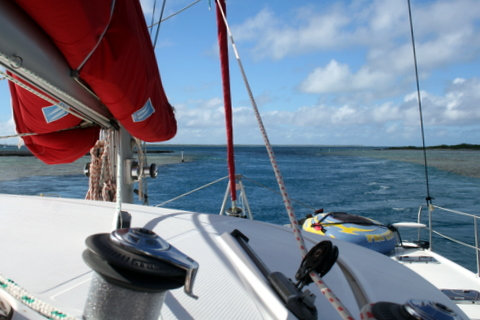
La passe de Maupihaa, étroit couloir de 200m de long.
En effet, quelques 200km à l'ouest de Bora Bora, se situe le dernier atoll habité de Polynésie, répondant au doux nom de Maupihaa. Enfin, quand je dis 'habité', je veux dire qu'il y a 2 familles qui se disputent les cocotiers, seule richesse de l'île.
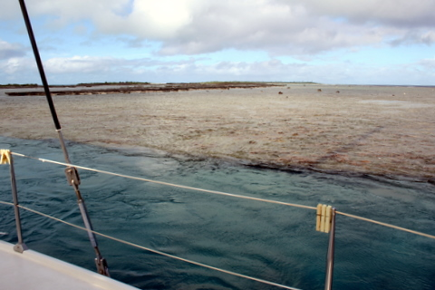
Les murs de corail sont vraiment très proches du bateau.
Nous avons donc fait route vers cet atoll un peu isolé. La mer était agitée et le vent régulier, soufflant entre 15 et 20 noeuds, de secteur EST. Nous avons envoyé le spi et couvert les 130 nm en un peu moins de 24 heures. Nous nous sommes présentés devant la passe de Maupihaa vers 8 heures, ce matin, et je dois avouer qu'à côté d'elle, le franchissement du canal de Panama, c'est pour les tapettes.
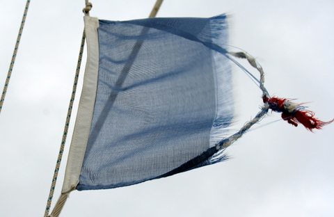
Notre pavillon de complaisance ne complaît plus beaucoup...
L'unique passe fait 20m de large sur 200m de long, lorsque nous l'avons embouquée, le courant sortant était de l'ordre de 6 noeuds. Autant dire qu'avec les moteurs poussés à 2.500 tours, nous avons mis un bon quart d'heure à franchir les 200m. Impressionnant !
11 Juillet 2010 - Bora Bora, mais où est le soleil ?
Le 10 juillet fut exceptionnel, le 11 fut magique. Ce jour restera en effet gravé dans les mémoires de tous les habitants du Pacifique Sud comme étant celui où Tintin a failli périr sur le bûcher*.
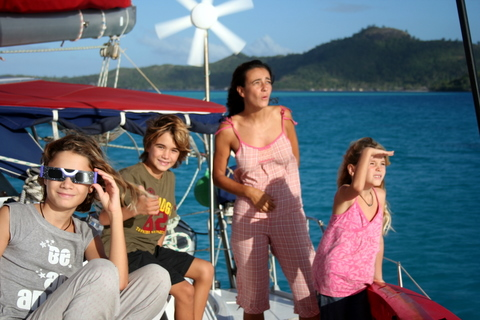
A 8h du mat, tous le monde est sur le pont.
En prévision du phénomène astronomique du jour, nous avions mis le réveil sur 9h (on se laisse un peu aller ces derniers temps), afin d'être sur le pont pour voir l'éclipse totale prévue pour 9h30.

Soleil dans les nuages et soleil dans un filtre polymère. Eclipse solaire à 92%, paraît-il.
Vers 8 heures, on a entendu Kenya s'exclamer: "C'est bizarre, il fait de plus en plus sombre". Sidney s'est alors écrié: "C'est l'éclipse. C'est l'éclipse." Et Averell, euh...non, Syr Daria a ajouté: "Quand c'est qu'on mange ?". Cécile et moi sommes sortis précipitamment de notre cabine où, en cette heure matinale, j'essayais de convaincre Cécile de me faire un petit massage local, rapport à une vilaine contracture dont j'étais l'innocente victime.
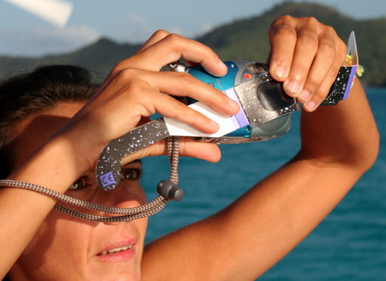
La technique de Cécile pour faire les photos de l'éclipse.
On s'est retrouvé sur le pont où, grâce à nos lunettes 'spécial éclipse', on a tous pu admirer le spectacle de la lune passant entre la terre et le soleil. Cécile à même réussi à photographier le phénomène en utilisant les lunettes comme filtre. Pas mal, non ?

La lune quitte le disque solaire.
*Voir "Le temple du soleil" et, si vous ne comprenez pas tout, "Les 7 boules de cristal" et, évidemment, pour les amateurs éclairés, "Tintin au Kenya", "Vol 714 pour Sydney" et l'inévitable "Bijoux de la Syr Daria".
10 Juillet 2010 - Bora Bora, encore des poissons.
Le 10 juillet est en général un jour favorable pour filmer les poissons à Bora Bora. L'année 2010 n'a pas fait exception à la règle puisqu'en dépit de l'alizé soutenu, nous avons pu nous rendre au lieu dit 'Le jardin de corail', pour y prendre ces quelques clichés.
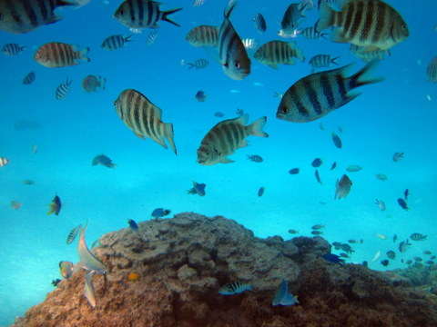
C'est marrant non ? On dirait que la lumière vient du fond...
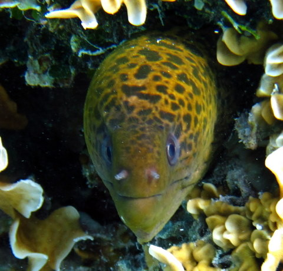
Murène dans son trou.
C'est beau hein ? Allez, zou, encore une petite.
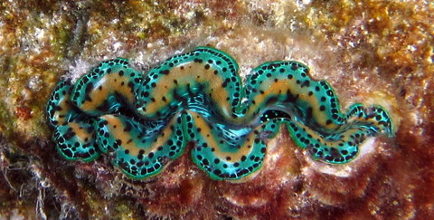
Bénitier.
Je vous promets. Dès que l'eau sera de nouveau trouble et morte, je vous enverrai des photos plus intéressantes. A ce propos, à ceux qui se demandent si l'on ne s'ennuie pas trop à Bora Bora, je réponds: nous coulons des jours assez tranquilles, école le matin, barbotage l'après-midi et film en soirée. Eh oui, la vie est dure. Et après, on meurt.
9 Juillet 2010 - Bora Bora, Danse, lagon et vahinés.
Durant le mois de juillet, les borains borains construisent des cases provisoires sur l'esplanade centrale du village afin d'y tenir des auberges et des stands de foire en tous genres.
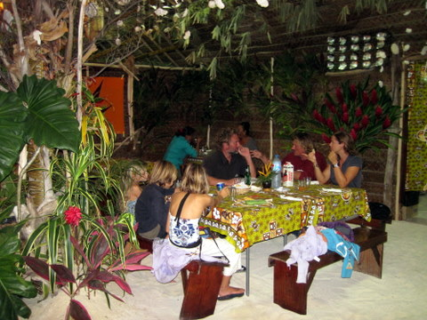
Repas du soir dans une case bien décorée.
Nous avons profité de l'une de ces cases pour manger, avec Markus et Tina, un excellent chow man (c'est-à-dire un mélange de nouilles, légumes et poulet) en buvant un vin de pays d'Oc de derrière les bambous.
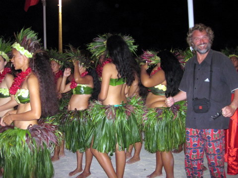
Eric et ses vahinettes.
Ensuite, nous avons assisté à un ballet sur l'esplanade, animé par le groupe de percussionnistes de Teputo. Comme prévu, les vahinés du devant avaient un peu de mal à masquer celles de derrière, légèrement plus enveloppées, il faut bien le dire. Cela ne m'a pas empêché de me faire photographier en présence de ces dames dont l'embonpoint n'empêche nullement le déhanchement.
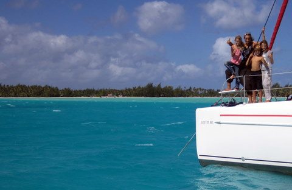
Le lagon, le bateau et la famille.
Le lendemain, nous avons commencé le rituel tour du lagon en bateau de sorte que nous puissions photographier le piton central sous tous les angles possibles. Et comme l'alizé s'est maintenant établi de manière durable entre 20 et 30 noeuds, les éoliennes débitent autant d'ampères que moi de conneries. C'est Versailles à bord !
8 Juillet 2010 - Bora Bora, ne croyez pas tout ce qu'on vous dit.
Selon les Français, Bora Bora est le plus beau lagon du monde. Nous y sommes en ce moment et je peux vous dire que tout n'est pas rose, ici. On vous montre l'avant du décor mais nous, faisant preuve d'une audace incroyable et prenant des risques inouïs, nous avons voulu vous montrer la réalité des choses, même si cette réalité doit en choquer quelques-uns.
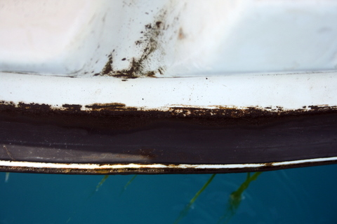
Le célèbre marché aux légumes de Bora Bora.
Voici les clichés que nous avons pu prendre, au péril de nos vies, dans les endroits dont la promotion se garde bien de faire la publicité.
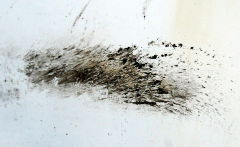
La fameuse chute d'eau de Bora Bora.
Nous n'avons pas eu à aller bien loin pour vous rapporter ces images insoutenables, qui montrent bien la précarité dans laquelle vivent les insulaires, ici, à Bora Bora.
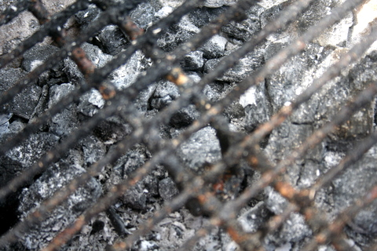
La cathédrale de Bora Bora.
Vous qui rêvez de venir ici, à Bora Bora, pour nager dans le lagon, réveillez-vous: c'est l'enfer, la grisaille et la pollution qui règnent en maître, ici, à Bora Bora. En plus il fait froid. Vous avez bien fait de ne pas venir.
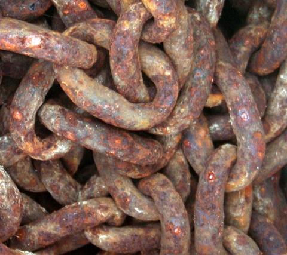
Gros plan du port de Bora Bora.
Enfin, tant qu'à être sur place, autant se trouver un coin moins pourri que les autres...
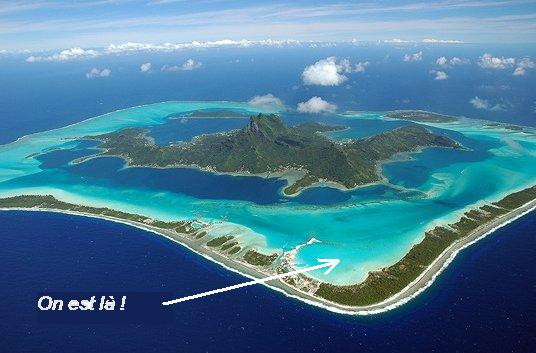
Bora Bora, lagon de rêve.
6 Juillet 2010 - Tahaa, Oa limpide.
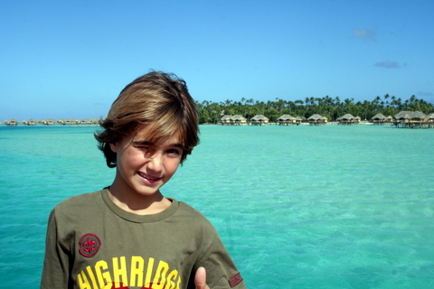
Sidney devant l'hôtel.
Partageant le lagon avec Raiatea, l'île de Tahaa offre la particularité d'être contournable en bateau, la barrière de corail étant relativement éloignée de la terre ferme. Nous avons emmené Let It Be autour de Tahaa et jeté l'ancre juste en face de l'hotel Relais & Châteaux, dont l'emplacement n'a manifestement pas été choisi au hasard.
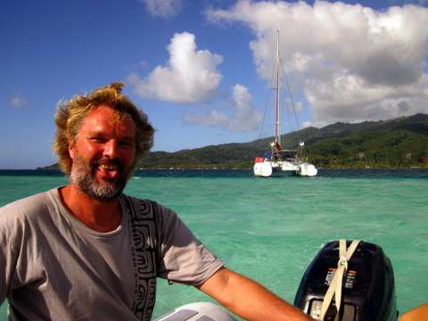
Eric, dit "Barbe grise", à la barre du dinghy.
En effet, outre la vue splendide qu'il offre sur Bora Bora, situé à 15km au large, l'hôtel se trouve à côté d'un Oa, c'est-à-dire une brèche dans la barrière de corail qui permet à l'eau d'entrer et sortir, sans toutefois permettre aux embarcations de faire de même, à la différence des passes.
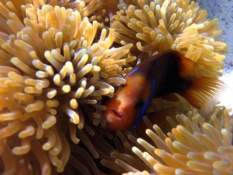
Anémone et Némo (enfin presque).
Cet Oa constellé de patates de corail multicolore abrite également une faune bigarrée qui erre oisivement dans une eau trop claire pour être honnête. On a donc enfilé palmes, masques et tubas avant d'y plonger. On a pu admirer nombre de poissons dont un magnifique (et légèrement bedonnant) Umé tarei, qui ne doit sa survie qu'à la présence d'une caméra plutôt que d'un harpon dans mes mains. C'est en effet notre met favori depuis que nous sommes en Polynésie (j'en avais flèché 5 hier et on s'en est fait une brandade pas plus tard que ce midi).
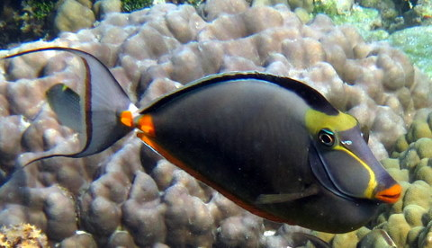
Umé tarei.
De mémoire de Cécile, oncques ne vit plus beau spectacle sous-marin. C'est simple, en rentrant sur le bateau, elle était tellement contente qu'elle nous a interprété une petite danse du ventre de belle facture, sous le regard incrédule des enfants.
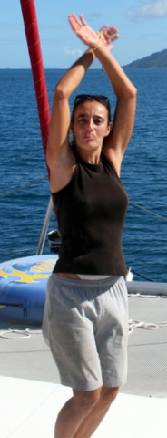
Cécile avec son short taille basse et son string.
3 Juillet 2010 - Raiatea, pluie diluvienne.
On ne traîne pas. Après un stop d'une journée à Huahine, nous sommes partis vers Raiatea, située 20 nm plus à l'ouest. Nous avions l'intention de passer plus de temps à Huahine mais les pluies incessantes nous énervaient.
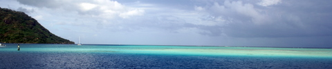
Passe ouest de Huahine: on voit assez bien la différence de profondeur entre la passe et le lagon.
Nous avons traversé le chenal en essuyant quelques grains mais nous sommes quand même parvenus à mouiller dans une baie calme, à l'est de Raiatea. Sans doute pour nous punir de notre outrecuidance, dame Nature nous envoya alors un farandole de nuages agrémentée de pluies pas tropicales, mais presque. Nous avions quitté Huahine pour échapper à une pluie fine et nous avons été accueillis à Raiatea par des torrents tièdes tombant lourdement d'un ciel anormalement bas et chargé pour la saison. Djeu.
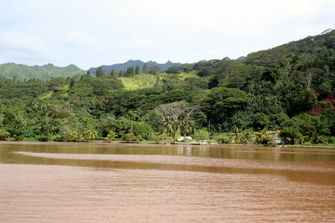
L'eau de la baie devient brune des alluvions.
Nous avons donc fait le plein d'eau douce et pris une bonne douche sur le pont, ce qui nous a agréablement rafraîchis. Ensuite, les vilains nuages sont partis et nous avons fait un tour à terre. En chemin, nous sommes tombés sur une balance en état de fonctionnement. Je l'ai essayée et, manifestement, elle n'était pas bien étalonnée: 87 kg, ce qui veut dire que je n'ai pris que 5 kg depuis notre départ. Cécile s'est alors posée, telle une libellule, sur le plateau et ce qui devait arriver arriva: 50kg tout rond, Cécile a perdu 1 kg ces derniers mois. Quant aux enfants, ils continuent leur lente progression, largement en dessous des normales saisonnières: 26 kg pour Kenya, 25 pour Sidney et 22 pour Syr Daria. Alles Goed !!
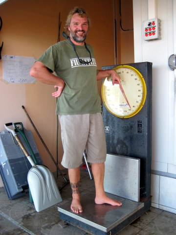
87 kg, sans commentaires.
1er Juillet 2010 - Huahine, Grand frais.
Nous sommes partis de Moorea vers 17 heures, à la nuit tombante. Dès que nous avons franchi la passe, nous avons découvert 'la mer du vent'. Qu'est-ce donc que ce nouvel idiomatisme ? Lorsque le vent souffle sur la mer, il génère des vagues, dont le sens correspond à celui du vent et la hauteur dépend de la force du vent. On parle de 'la mer du vent'. Incroyable, non ?
En outre, météofrance avait lancé un BMS (bulletin météo spécial) avec un avis de grand frais (c'est-à-dire, beaucoup de vent) et une houle résiduelle de sud de l'ordre de 1 à 2m. Résultat: nous avons eu droit à des creux de 4m et des vents oscillant entre 25 et 30 noeuds pendant la traversée qui nous menait à Huahine. Sous génois seul, nous avancions gentiment, bercés par la houle, avec les vagues qui frappaient les coques à grand fracas.
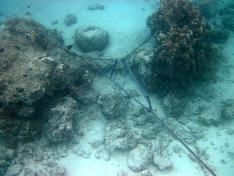
La chaîne fixée aux 2 patates de corail.
Après une nuit de ce traitement, Cécile était définitivement hors service, ce qui ne l'a pas empêché d'assurer jusqu'à notre arrivée. Cependant, pour pimenter un peu notre vie d'aventuriers modernes, nous avons décidé de nous faire un petit corps mort en arrivant. Qu'est-ce donc que cette nouvelle facétie ?
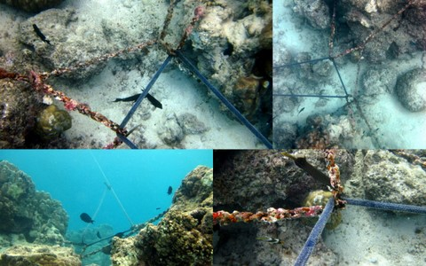
Détail de notre corps mort.
C'est très simple: l'ancre ne voulant pas se fixer, nous avons décidé de nous amarrer à une patate de corail. Justement, en inspectant les fonds marins autour de Let It Be, j'ai pu découvrir une paire de patates pourvues de chaînes. Il nous suffisait d'attacher un bout à ces chaînes, à l'autre bout duquel nous avions fixé une bouée munie d'une boucle. Cécile n'avait plus qu'à passer la pantoise dans ladite boucle pour amarrer solidement notre bateau. Une fois les corvées terminées, on a pu passer aux loisirs: on a profité des grains réguliers qui nous arrosent toutes les 2 ou 3 heures, généralement accompagnés de rafales de vent. Vive l'été.
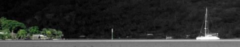
Le ciel est bas.
26 Juin 2010 - Moorea, Adios Manuios.
A l'heure où j'écris ces lignes, nos amis bretons du Manuia s'ennuient à l'aéroport de Faaa, en partance pour l'Europe. Sans doute ont-ils maintenant trouvé le repos de l'âme et l'absence de perspectives intéressantes dans leur nouvelle vie les rend-elle résignés... De toutes façons, ils n'étaient même pas vraiment bretons, alors... Enfin, on les salue quand même du fond du coeur et quand, nous aussi, nous rentrerons au froid, nous ne manquerons pas de venir les saluer et manger une galette au Mont St Michel.
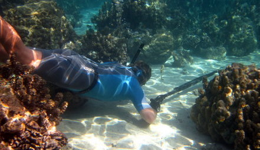
Eric pêche par 50cm de profondeur.
En attendant, nous sommes de retour à Moorea où, je vous laisse deviner...nous attendons un colis. Je reconnais que ça manque un peu d'originalité mais, nous sommes des gens méthodiques, voire routiniers, et les coups de téléphone à la poste nous enchantent chaque jour, de même que les réponses pour le moins farfelues de nos interlocuteurs. Enfin, apparemment, le dernier colis envoyé de Belgique avec les cours des enfants serait bien arrivé à Bora Bora où, malheureusement, ils ne veulent pas le conserver plus de 15 jours. Il nous reste donc 2 semaines pour nous y rendre, ce qui ne poserait pas de problème si nous ne devions justement attendre un autre colis à Moorea. Bref, que du bonheur !
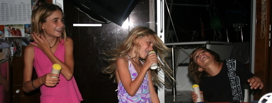
Les enfants font le spectacle.
Mais n'allez pas croire que nous soyons abattus, à pleurer en fond de cale, nous apitoyant sur notre sort. Non, non. Nous sommes des winners. Nous n'avons pas traversé le Pacifique pour nous laisser anéantir par le premier postier venu, cornebleu !
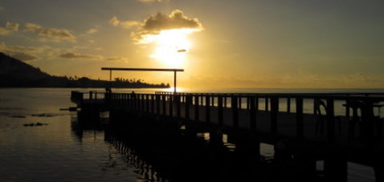
Coucher de soleil sur le lagon.
Nous continuons donc à pratiquer nos activités favorites: pêche pour Eric, classe et spectacles pour les enfants et rangement et nettoyage pour Cécile. Je conçois que certains parmi vous se demandent où je trouve les ressources nécessaires pour faire montre d'une telle volonté. Je vous l'avoue honnêtement, je n'en sais rien. Comme, en général, je ne ramène rien, je m'interroge. Peut-être est-ce tout simplement la baignade dans l'eau limpide à 28°C qui me motive ?
22 Juin 2010 - Tahiti, visite des sources thermales de Vaima.
Tahiti est une île constituée de 2 presqu'îles. A l'intersection des 2 presqu'îles, se situe une source thermale qui alimente le commerce local des eaux potables. C'est aussi un endroit très approprié pour se laver dans l'eau douce, luxe qui nous est interdit depuis un an.
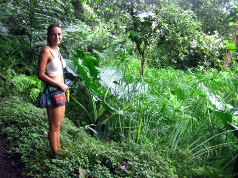
Cécile.
A Vaima, on peut aussi visiter un petit parc à la végétation luxuriante. Dès 9 heures, ce lundi, nous partîmes, toujours en compagnie de Manuias (que l'on continue à appeler ainsi alors que, désormais, le Manuia ne leur appartient plus et qu'ils sont en attente de leur grand retour en France, prévu ce 26 juin), nous partîmes donc à 10 vers Vaima, situé à 40km au sud de la marina. Nous avions un seul véhicule, ce qui nous donna l'idée d'une tactique fort simple pour gagner notre destination.
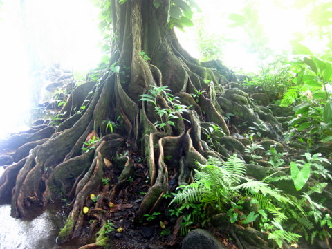
Racines magiques.
Nous nous séparâmes en 2 groupes. Dédé et moi avons pris la voiture, accompagnés des 3 plus petits enfants, pendant que les femmes, Marianne et Cécile, prenaient le bus avec les 3 grands. Ce plan d'une simplicité déconcertante et qui présentait l'avantage de respecter les us et coutumes locaux (les hommes ne font rien et boivent des bières pendant que les femmes se décarcassent), s'avéra cependant impossible à mettre en pratique.
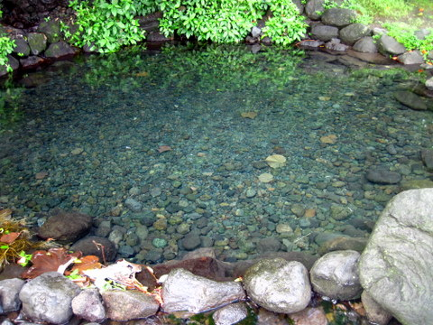
Vasque d'eau douce, juste avant qu'on se shampouïne.
En effet, bien que nous fussions déjà attablés à Vaima depuis près d'une heure, nous ne voyions toujours point poindre nos moitiés à l'horizon. Nous commencions à nous impatienter, bien légitimement il me semble. Lorsqu'enfin nous sommes parvenus à joindre les femmes par téléphone, elles nous informèrent que l'absence de bus les avait contraintes à pratiquer l'auto-stop, tâche relativement malaisée quand on la pratique en groupe. Enfin, une âme charitable les prit en pitié et les achemina jusqu'à nous. Pour finir, tout rentra dans l'ordre et nous pûmes nous baigner dans l'onde pure, en prenant soin de nos cheveux, comme dans la pub pour Tahiti douche.
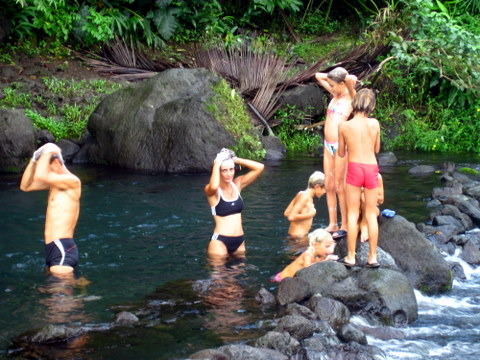
Tahiti douche.
20 Juin 2010 - Tahiti, vie à bord sous la pluie.
Nous approchons du solstice d'été et les conditions atmosphériques deviennent de plus en plus hivernales. C'est bien simple, hier matin, il faisait 24°C dans le bateau. Nous pensions avoir touché le fond et nous étions sur le point d'installer le chauffage à bord de Let It Be. Et pourtant, les choses devinrent pires: une dépression malhabile s'installa au méridion et nous envoya sans vergogne des vents du sud, charriant grand froid et embruns.
Dans ces conditions dantesques, il ne nous reste qu'à nous tenir à l'abri, bien au sec dans notre carré, à étrenner notre nouveau jeu: le monopoly polynésien.
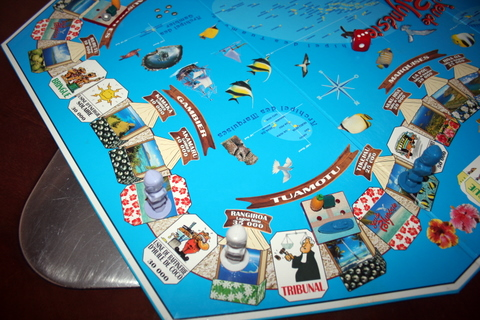
Monopoly.
Au grand plaisir des enfants, nous avons en effet acquis de haute lutte un ersatz local du célèbre jeu capitaliste. Les enfants se battent maintenant pour devenir acquéreur d'un motu aux Gambier et y construire une ferme perlière ou pour bâtir une pension aux Marquises et rançonner les autres joueurs qui auraient le malheur de s'y présenter ou, plus simplement, une usine à faire des jus d'ananas... En plus, les cartes 'météo' que l'on tire de temps en temps apportent leur lot de tsunamis et autres cyclones, qui, en un coup de dés, peuvent réduire les exploitations les plus florissantes en un tas de ruines !
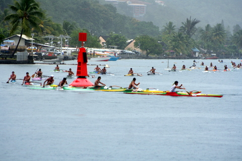
Pirogues.
Les insulaires, eux, ne se reposent pas, même quand il pleut des torrents d'eau tiède. Nous avons assisté à une course de Va'a local qui nous a bien amusé puisque nous étions stratégiquement positionnés près de la bouée autour de laquelle les pirogues devaient effectuer un virage à 90°. Evidemment, lors du premier tour, les rameurs se sont présentés à 8 de front et ce fut une empoignade de Va'as et pagaies saupoudré d'insultes locales.
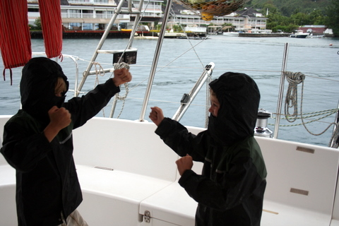
Ninjas.
Hélas, même quand il pleut, il faut manger et, la proximité du Mac Donald nous ayant inspiré, nous avons envoyé nos deux ninjas de service pour une mission ultra-secrète: se rendre au fast-food et en ramener 5 cornets de frites. Sidney-san et Syr Daria-san se sont donc entraînés un peu sur le pont avant de s'acquitter avec brio de leur mission.
15 Juin 2010 - Tahiti, retour à Papeete.
Les engrenages du moteur d'annexe étant arrivés d'Australie, nous sommes revenus à Papeete pour achever les réparations et bénéficier à nouveau de la puissance, certes parfois maléfique, de notre moteur de 20CV.
Sitôt arrivés, nous avons profité de la belle matinée d'hiver pour remplacer les roulements des chariots de grand'voile grâce aux billes de Torlon récemment reçues.
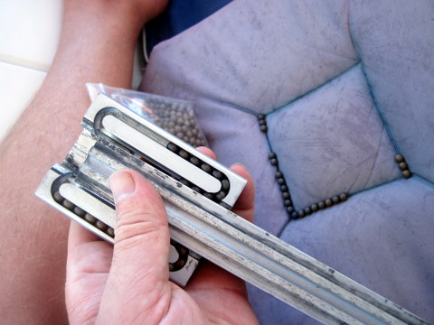
Les billes de Torlon retrouvent leur roulement.
Ensuite, nos amis de Manuia nous ont fait découvrir un petit spot de plongée PMT fort intéressant: nous sommes allés en annexe vers l'aéroport de Faaa, en bout de piste, et nous avons enfilé palmes, masque et tuba pour aller visiter un avion, qui, manifestement, avait raté son atterrissage.
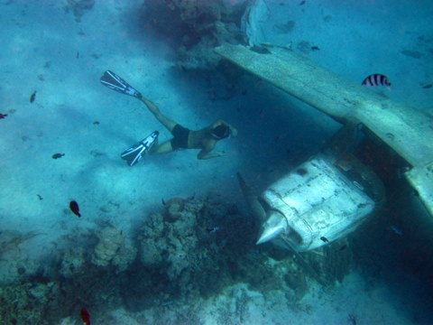
Avion sous-marin.
A 10 dans l'eau claire, nous avons exploré l'épave et, malheureusement, nous n'avons pas trouvé de trésor, ni même de carte au trésor. En outre, le pilote s'en est probablement sorti parce que, contrairement à nos attentes, il n'y avait pas de squelette aux commandes.
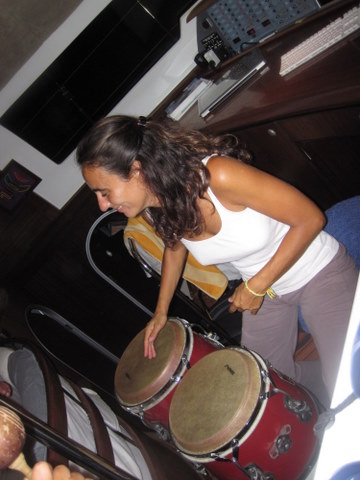
Cécile aux bongos.
Pour terminer cette harassante journée, nous avons rejoint Markus et Tina au happy hour. Nous avons bu quelques bières et ingurgité 2m de pizza avant de nous rendre sur Blue Calaloo, le cata de 56 pieds de Markus, pour nous déchaîner au son de la salsa et à grand renfort de rhum. Autant dire que nous avons essuyé les plaintes de tout le mouillage quand, vers 2h du matin, nous avons décidé de nous entraîner aux percussions...
12 Juin 2010 - Moorea, histoire de raies.
D'ordinaire, la raie est un animal craintif, difficile à approcher même si, parfois, emportée par sa curiosité, elle s'approche à quelques mètres. Dans le lagon de Moorea, il existe un petit banc de sable où l'on peu rencontrer des raies à moitié apprivoisées, qui se précipitent sur le premier plongeur venu, en quête d'une maigre pitance.
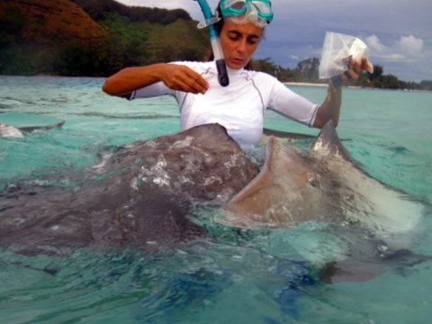
Cécile nourrit les raies.
Dès qu'on plonge à l'eau, les raies approchent et se collent littéralement au corps, comme des patchs géants (ce qui, en soi, est assez normal puisque leur bouche se trouve sur le côté 'fond' de la mer ou, plus simplement sur le côté pile de la raie). Les raies, qui mesurent quand même un bon mètre de diamètre, sont très affectueuses et, n'était leur consistance un peu gélatineuse et leur aspect gluant, on leur jetterait bien un bâton en criant "Va chercher".
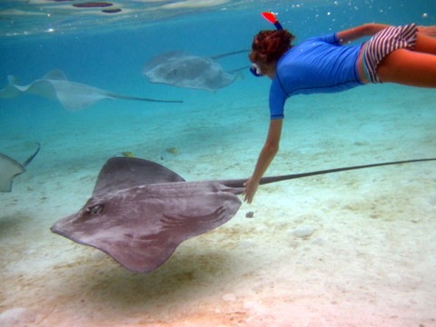
Kenya s'amuse.
Cécile est bien restée une heure à distribuer des petits morceaux de poisson, tandis que les enfants se laissaient trainer par les raies ou, plus simplement, essayaient de les suivre dans leur majestueuse progression.
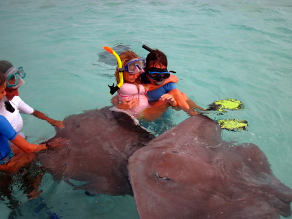
Syr Daria, pas trop rassurée quand même...
Un souvenir en béton pour les petits et les grands.
10 Juin 2010 - Moorea, ascension au belvédère.
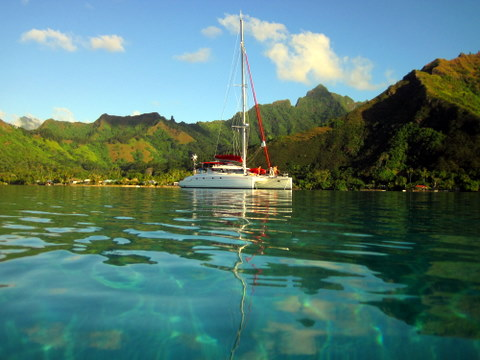
Let It Be au mouillage dans la baie d'Opunohu.
Qui dit "Manuia", dit "rando en montagne". Moorea n'a pas fait exception à la règle et ses reliefs tourmentés nous ont offert un terrain de jeu à la mesure de nos ambitions.
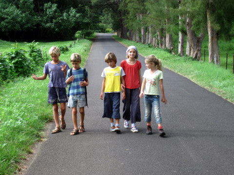
Les pieds nickelés au départ.
Après l'ascension du Mont Rotui, nous avions décidé d'aller nous faire griller quelques saucisses au belvédère, dans le fond de la baie d'Opunohu.
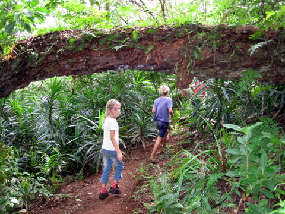
Syr Daria en pleine jungle.
La promenade de quelques 3 heures qui nous conduit jusqu'au belvèdère est, pour une fois, bien balisée et entretenue, voire pratiquée, ce qui permet de bien profiter des paysages (puisqu'on peut décoller les yeux du sol sans risquer de s'étaler). Le début est même macadamisé: on suit la route sur 2 km avant de s'enfoncer dans la jungle.
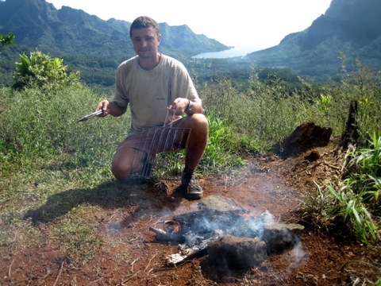
Dédé allume le feu. Au fond, la baie d'Opunohu.
Vers midi, nous avons débouché sur le belvédère où, comme prévu, nous avons trouvé quelques pierres et un peu de bois, ce qui nous a permis d'allumer le feu et de griller quelques saucisses achetées le matin, le tout arrosé d'un Pierre Marcel de bonne facture et d'eau citronnée pour les enfants.
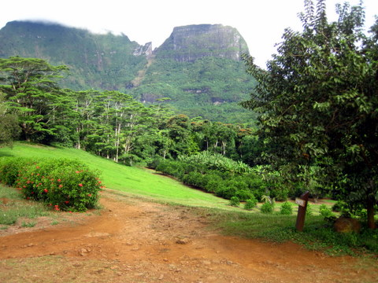
Fin de la rando dans une plantation de fruits.
Nous sommes ensuite redescendu vers le lycée agricole où nous avons fait une pause glace (arrêt obligatoire si l'on souhaite refaire des randos avec les enfants un jour). Le lycée ne se contente en effet pas de cultiver des ananas, pamplemousses, citrons, papayes, caramboles, goyaves, mandarines et corrosol, il les transforme également, en produits à haute valeur ajoutée: glace, confiture ou sirop. Pendant que les enfants dégustaient leur glace à la vanille, je savourais ma glace au pamplemousse tandis que Cécile, toujours ouverte aux bonnes choses de la vie, se délectait d'une glace au gingembre.
8 Juin 2010 - Moorea, retrouvailles.
Ca faisait 3 mois qu'on n'avait pas revu nos amis bretons du Manuia. Lors de notre précédente réunion, aux Marquises, nous avions eu un peu de mal à suivre le rythme trépident des Motte, puisque tel est leur patronyme. C'est donc un peu inquiets que nous sommes arrivés à Moorea, île paradisiaque située à quelques 20km à l'ouest de Tahiti.
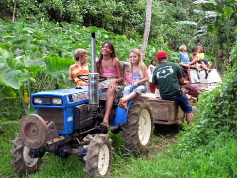
Les enfants visitent la propriété de Daniel.
Nos craintes n'étaient pas dénuées de fondement. Dès notre arrivée, nous fûmes invités chez Daniel, habitant de la baie, qui nous proposa une visite guidée de son jardin. Nous avons pu admirer les champs de bananiers, de taro, de gingembre, et même de cannes à sucre. Le soir venu, nous avons partagé un repas frugal avec Daniel, sa femme Louise, ses 7 enfants et les 5 Manuias.
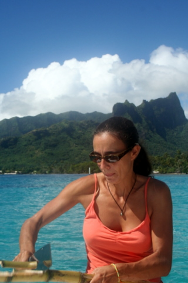
Cécile fend la canne.
Dès le lendemain, nous quittions la baie d'Opunohu pour rejoindre celle de Cook, distante de 5 miles. Arrivés sur place, nous nous lançâmes dans une partie de pêche au harpon qui permit à Sidney de réaliser sa première prise.
Sidney, fier comme un bar tabac.
Mais les sports d'eau ne sont pas les seuls que l'on pratique à Moorea. En effet, le relief accidenté de l'île offre également de nombreuses possibilités de promenades. C'est ainsi qu'en ce 8 juin, date solennelle s'il en est, nous gravîmes, dans un silence pas mortuaire mais presque, les quelques centaines de mètres qui nous séparaient du belvédère.
Moorea, passe d'Opunohu.
Au terme de 18 heures d'efforts, en plein soleil et sans oxygène, sous une température avoisinnant les 76°C et malgré les pentes à plus de 62%, nous pûmes prendre ce cliché, qui restera probablement dans les annales de l'alpinisme. En tous cas, la vue était splendide et, n'était l'absence de télésièges, on aurait bien bu un vin chaud.
5 Juin 2010 - Papeete, on finalise.
Mektoub. Ce samedi, après une ultime visite au Carrefour du coin pour acheter quelques fromages de plus, nous avons décidé de lever l'ancre ce dimanche. Comme au bon vieux temps, Sidney est monté sur la première barre de flèche afin de scruter l'horizon et déterminer si les dieux seraient avec nous pour la traversée de Papeete à Moorea, soit 12 miles.
Sidney monte (comme un singe) le long du mât.
Grâce à ses yeux d'épervier, Sidney a confirmé, sans ambiguité possible, qu'Eole, Neptune, Poséidon, et tous leurs immortels potes, étaient tout-à-fait d'accord pour qu'on parte le lendemain, même si c'était un dimanche.
On a quitté le mouillage à 10h puis on est passé prendre 500L de gasoil à la pompe avant de prendre la passe Ouest, pour sortir du lagon de Papeete. Au passage, on a pu observer les Tahitiens se livrant à une activité très en vogue: l'absorption de bière les pieds dans l'eau.
Le dimanche, jour de la messe et de la bière.
Un peu plus loin, alors que nous naviguions dans des conditions très difficiles, Kenya et Syr Daria étaient toutes deux de blanc vêtues pour danser sur le trampo.
Twist à St Tropez.
On est arrivé à Moorea vers 15h, directement rejoints par nos amis de Manuia qu'on avait plus vu depuis les Marquises. Les retrouvailles ont été grandioses, à l'image de l'île qui leur servit de cadre.
Moorea, baie d'Opunohu.
3 Juin 2010 - Papeete, la revanche du Jeudi
Voilà 2 semaines que je vous taraude les méninges avec mes histoires de droïdes à 2 balles et certains d'entre vous s'en lassent, comme moi, d'ailleurs.
Dès lors, finies les allusions grossières, au rebut les considérations ineptes sur la force, au ruisseau les références galvaudées à des oeuvres abrutissantes produites par un capitalisme en déliquescence. Place aux faits, et que soit le matérialisme !!
Les petits pois, sans les carottes.
On a donc reçu la pompe de gavage du déssalinisateur, que j'ai montée et qui s'est avérée fort efficace puisque nous disposons désormais d'un générateur d'eau VRAIMENT douce.
On a reçu les 300 billes de Torlon, dont photo ci-dessus qui, pour ceux qui se le demandent, iront se loger dans les chariots de lattes de grand'voile et permettront à cette dernière de coulisser sur le rail de mât, ce qui, en définitive, nous permettra tout simplement de hisser la grand'voile (bref ce sont les billes d'un roulement qu'on ne peut pas faire en acier car elles rouilleraient aux embruns...).
On a reçu l'antenne satellite qui nous permettra de mettre le site à jour, même dans les endroits où la main de l'homme n'a jamais mis les pieds.
On n'a pas reçu les engrenages de l'en-base de moteur de dinghy mais, de toutes façons, on a un petit moteur de rechange avec lequel on peut se débrouiller. On fera suivre les engrenages sur Bora Bora.
Conclusion: on fait les formalités de sortie et on s'en va ! Tralala ! Et, oserais-je ajouter, pouêt pouêt...
30 Mai 2010 - Papeete, Escale technique, épisode III
Alors que nous avons réussi jusqu'à présent à éviter les robots-espions de l'ennemi qui continuent à sillonner l'astroport pour retrouver notre trace, nous avons découvert ce matin le nouveau plan diabolique de Dark Taxor pour nous subtiliser notre argent.
Il s'agit d'un nouveau type de vaisseau, qui ne ressemble en rien aux habituelles frégates de l'empire: perché sur deux pirogues, il ne s'agit ni plus ni moins que d'un bar qui ancre dans le lagon, par 80 cm de profondeur. Je vous l'avais dit: tous les moyens sont bons pour nous attirer du côté obscur.
Ce n'est pas l'étoile noire mais c'est un vrai trou noir pour notre argent: à son contact, il disparaît irrémédiablement.
Malgré cela, Chewbéric continue à réparer LET IT BE sous le cagnard, sans se laisser (trop) tenter. Immigratis nous a octroyé un droit de cité indéterminé dont nous n'abuserons guère mais c'est toujours bon de se savoir bien accueillis (à moins qu'il ne s'agisse d'une ruse de Dark Taxor pour nous essorer encore un peu le portefeuille...). Grâce à notre agent en Belgique, nous avons pu obtenir l'éclaté du moteur de propulsion nucléaire du dinghy (merci Thibaud) et nous devrions pouvoir commander les pièces sous peu. Conclusion: on va encore rester ici un petit peu...
3 heures de couture pour réparer le lazy bag.
Quant au capitaine Han Cécile, elle continue à enseigner les rudiments de la force à Obiwan Sidnoby qui est maintenant capable de lire dans ses pensées toutes les tables de multiplication jusqu'à 10.
Contrairement aux apparences, c'est Cécile la maîtresse et Sidney l'élève.
Heureusement, le soir venu, nous nous réunissons tous à la Casa Bianca, pour profiter des bières bien glacées de l'Happy Hour en évoquant chacun nos plans pour une évasion imminente.
27 Mai 2010 - Papeete, Escale technique, épisode II
Dans un message précédent, je vous annonçais notre arrivée incognitos à Papeete. Depuis, vaillamment, nous luttons pour vaincre les démons obscurs qui oeuvrent dans les ténèbres. Hélas, pas de chance nous avons.
Les billes de Torlon, difficile est leur quête. Longue est la route qui mène au vendeur et nombreux sont les embouteillages. Introuvables sont les billes et, en plus, cassé est notre moteur d'annexe. Chiant, c'est.
Bref, malgré notre grande maîtrise de la force et l'évidente supériorité de notre cause, le côté obscur demeure puissant et les ennuis de l'empire nous bombardent de leur lasers.
Coordonnées espace-temps 20.38765.12.
Mais les princesses Kenya et Syr Daria ne sont pas du genre à se laisser impressionner. Quant à Obiwan Sidnoby, il continue à s'entraîner jour après jour, en vue de l'affrontement final avec les forces décadentes de la marina.
De nombreuses batailles ont déjà été gagnées, telle celle de la bouteille remplie de gaz métamorphique qui permet de respirer sous l'eau, celle de la chaîne de 80m qui pèse 250 kg mais qui maintient notre vaisseau même quand les conditions sont quantiques et, évidemment, les documents officiels qui donnent au LET IT BE le droit de voyager dans la galaxie sans restriction, même à la vitesse warp 2.2.
Par contre, la félonie des clones est sans limites: grâce à leurs mines cachées sous la mer en dépit des conventions intergalactiques, ils ont réussi à détraquer notre propulsion. Leur réseau malfaisant et tentaculaire leur a même permis de faire en sorte que les pièces de rechange soient introuvables. Nous avons quand même mis la main sur un contrebandier qui accepte de les faire venir d'une planète non controlée par l'empire: l'Australie, située aux confins de la galaxie. Mais ça prend du temps et ça coûte cher...
Le convecteur isotropique du groupe de propulsion hyperdrone est cassé.
Il ne reste plus qu'à trouver le Torlon, la pompe de gavage, le BGAN, à recoudre le lazy bag, à trouver des coussins de pont et deux ou trois autres trucs et nous pourrons repartir vers de nouvelles aventures...
25 Mai 2010 - Papeete, Escale technique, épisode I
L'histoire suivante se passe de nos jours dans un port lointain. Le vaisseau du capitaine Cécile et de Chewbéric a été entraîné par un rayon protonique du côté obscur de la mer, à Papeete, infâme repère de voleurs et d'escrocs qui ne survivent que grâce à l'ingestion régulière d'une substance toxique: le fric. A leur tête, le terrible Dark Taxor règne sans partage et impose sa loi jusqu'aux confins de l'archipel.
Hélas, le capitaine Cécile et son fidèle Chewbéric doivent réparer le Faucon Millénium, euh...non, le Let It Be qui a subi des avaries en traversant un champs de patates de corail pour semer les sbires de Dark Taxor. Arrivés incognitos à Papeete, lieu de perdition aux allures de paradis, ils doivent maintenant se procurer 100 billes de Torlon, produit de contrebande s'il en est. En effet, sans ces billes, impossible de hisser la grand'voile (ce sont les roulements des chariots qui permettent à la voile de coulisser le long du mât).
Seule photo connue du capitaine Cécile.
Outre le Torlon, il faut également trouver un mécanicien spécialisé en propulsion sub-luminique, pour réparer le moteur d'annexe qui cliquète misérablement. Egalement au programme, une transaction risquée avec la technostructure néocapitaliste de la république d'occident: les droïdes de communication et de gavage d'osmoseur sont kaput et doivent faire l'objet d'un échange secret, sans attirer l'attention de Dark Douanix, le célèbre lieutenant de Dark Taxor.
Pour couronner le tout, il faut également prêter allégeance au seigneur local: Immigratis, afin qu'il nous autorise à quitter l'astroport lorsque nous aurons rempli nos soutes de produits de contrebande divers.
Bref, que du plaisir à Papeete où, pour la première fois depuis 6 mois, nous avons dû faire face à des conditions quasi-polaires: 25.9°C à 7 heures ce matin.